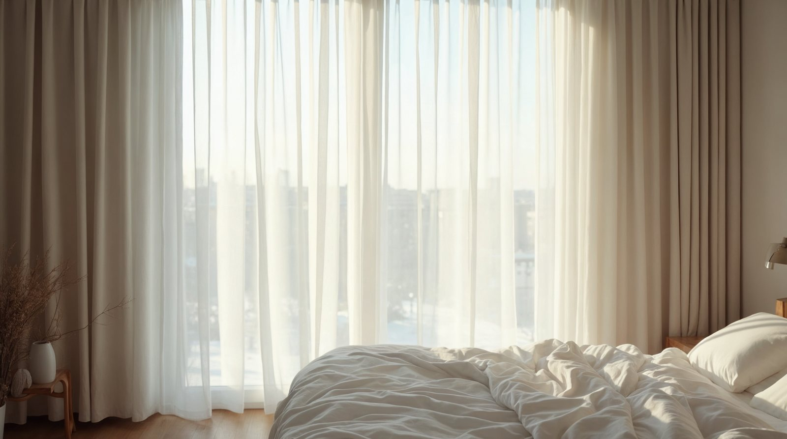
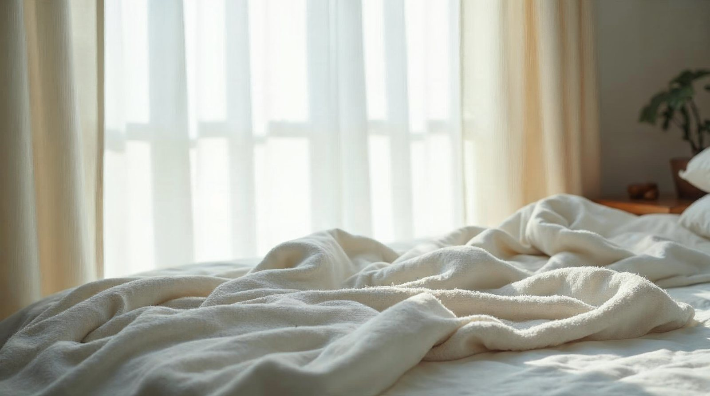
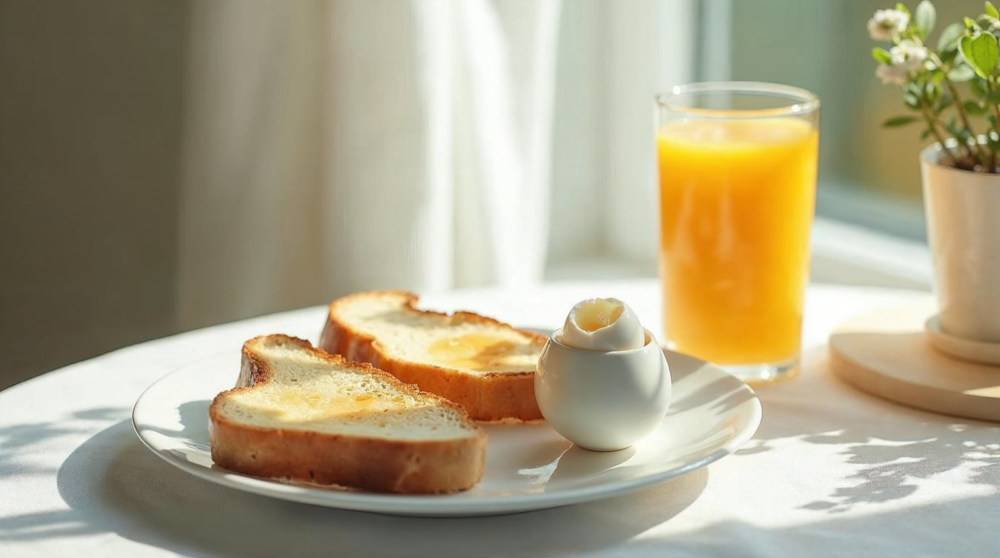

이종호 한의사 감수좋은꿈참사랑한의원 대표원장 (한의사 면허번호 19769)발행 2026-11-25 · 수정 2026-11-26
이 글의 차례
- 왜 시험이 끝나면 밤낮이 바뀌기 쉬울까요
- 늦게 자서 늦게 일어나는 것과 잠이 모자란 것은 어떻게 다를까요
- 먼저 이렇게 여쭙니다
- 일상에서 먼저 해 볼 수 있는 것
- 두 주 동안 기상 시각은 이렇게 당겨 보세요
- 낮 시간은 어떻게 채우면 좋을까요
- 가족은 어떻게 도와주면 좋을까요
- 왜 낮잠이 리듬을 다시 흔들까요
- 상황별 예시
- 잠들기 전 한 시간은 어떻게 보낼까요
- 카페인과 야식은 어떻게 할까요
- 결과 발표와 원서 기간에는 어떻게 지낼까요
- 스스로 점검해 보세요
- 얼마나 지켜보고 언제 상담할까요
- 한의원에서 함께 살필 수 있는 경우
- 이렇게 기록해 오시면 상담이 쉬워집니다
- 이런 증상은 먼저 확인이 필요합니다
- 함께 읽으면 좋은 글
수능 뒤 밤낮이 바뀌었다면 잠드는 시각보다 일어나는 시각을 먼저 정하고 조금씩 당기는 것이 리듬을 되돌리는 순서입니다. 긴 시험 준비가 끝나면 긴장이 풀리면서 새벽까지 휴대폰을 보고 정오가 넘어 일어나는 날이 이어지기 쉽습니다.
노량진에서 다음 시험이나 면접을 준비하는 수험생도 시험 직후 같은 고민을 자주 이야기합니다. 대개 두 주 정도에 걸쳐 조금씩 당기는 것을 목표로 잡습니다.
왜 시험이 끝나면 밤낮이 바뀌기 쉬울까요
- 정해진 등교나 학원 시간이 사라지면 일어나는 시각이 쉽게 늦어집니다.
- 평일과 주말의 구분 없이 지내다 보면 요일 감각이 흐려져 리듬을 붙잡을 기준이 사라지기 쉽습니다.
- 밤늦게 보는 밝은 화면은 잠드는 시각을 뒤로 미는 데 영향을 줄 수 있습니다.
- 낮에 햇빛을 보고 움직이는 시간이 줄면 밤에 졸음이 덜 올 수 있습니다.
- 늦게 일어나면 아침 식사가 사라지고 첫 끼가 오후로 밀려, 몸의 시계도 함께 늦어지기 쉽습니다.
- 오래 쌓인 긴장이 한꺼번에 풀리면서 낮잠이 길어지기도 합니다.
- 결과 발표와 원서 접수를 기다리는 걱정이 밤마다 이어지기도 합니다.
늦게 자서 늦게 일어나는 것과 잠이 모자란 것은 어떻게 다를까요
밤낮이 바뀌었다고 해도 모두 같은 상태는 아닙니다. 새벽 네 시에 자서 정오에 일어나 잠은 여덟 시간 가까이 채우는 경우가 있고, 새벽까지 뒤척이다 아침에 억지로 일어나 서너 시간밖에 못 자는 경우도 있습니다.
앞의 경우는 잠의 양보다 시간대가 밀린 것이라, 일어나는 시각을 조금씩 당기는 방법이 잘 맞는 편입니다. 뒤의 경우는 잠드는 것 자체가 어려운 상태일 수 있어, 잠들기 전 긴장과 걱정, 카페인과 화면 사용을 더 꼼꼼히 살펴야 합니다.
진료실에서 잠을 잘 못 잔다는 말씀을 들으면 저는 잠이 안 드는 건지, 자주 깨는 건지, 시간대가 밀린 건지부터 나누어 여쭙습니다. 겉으로는 같은 말이어도 밤에 겪는 일이 다르기 때문입니다.
스스로 구분해 보려면 휴대폰을 내려놓은 시각과 실제로 잠든 것 같은 시각을 따로 적어 보세요. 그 사이가 30분 넘게 벌어지는 날이 많다면 시간대보다 잠드는 과정에 더 신경을 써야 할 때입니다.
먼저 이렇게 여쭙니다
- 요즘 몇 시에 잠들고 몇 시에 일어나나요?
- 낮잠을 자나요? 잔다면 몇 시에 얼마나 자나요?
- 잠들기 전 한 시간 동안 주로 무엇을 하나요?
- 카페인 음료를 하루 몇 잔, 몇 시까지 마시나요?
- 결과 발표나 면접처럼 앞으로 정해진 일정이 있나요?
- 기분이 가라앉거나 아무것도 하기 싫은 날이 이어지나요?
- 아침에 일어났을 때 머리가 무겁거나 속이 더부룩한가요?
- 밤에 자다가 깨는 일이 잦은가요, 한 번 잠들면 아침까지 자나요?
잠의 시간대와 함께 깊이를 여쭙는 것은, 같은 여덟 시간을 자도 자주 깨거나 얕게 자면 낮의 피로가 크게 남기 때문입니다. 아침 상태를 들으면 밤사이 몸이 충분히 쉬었는지도 짐작해 볼 수 있습니다.

일상에서 먼저 해 볼 수 있는 것
- 일어나는 시각을 하루나 이틀에 15~30분씩 당기고 주말에도 같게 맞추기
- 일어나면 커튼을 열고 10분이라도 밖에 나가 걷기
- 낮잠은 오후 세 시 전에 20분 안쪽으로 줄이기
- 오후 늦게는 커피와 에너지 음료를 줄이기
- 저녁은 잠들기 서너 시간 전에 마치고 늦은 야식은 피하기
- 저녁에는 방 조명을 조금 어둡게 하고, 잠자리에 드는 시각 대신 불 끄는 시각을 정해 두기
- 잠들기 한 시간 전에는 휴대폰을 책상 위에 두고 침대에서 떨어뜨리기
- 아침 식사를 간단히라도 같은 시각에 먹기
두 주 동안 기상 시각은 이렇게 당겨 보세요
한 번에 아침 일곱 시로 돌아가려 하면 첫날 몇 시간밖에 못 자고 낮에 쓰러지듯 잠들어 다시 흔들리기 쉽습니다. 그래서 기준을 잠드는 시각이 아니라 일어나는 시각으로 두고, 이틀에 30분 정도씩 앞으로 옮겨 갑니다.
- 첫째 주 앞부분: 지금 일어나는 시각에서 30분만 당겨 알람을 맞추고, 일어나자마자 커튼을 엽니다.
- 첫째 주 뒷부분: 이틀마다 30분씩 이어서 당기고, 일어나서 한 시간 안에 간단한 아침을 먹습니다.
- 둘째 주 앞부분: 같은 속도로 당기면서 오전 중에 밖에 나가 걷거나 볼일을 보는 일정을 하나 넣습니다.
- 둘째 주 뒷부분: 목표한 기상 시각에 닿으면 주말에도 그대로 지킵니다.
중간에 하루쯤 늦게 일어났다고 처음부터 다시 시작할 필요는 없습니다. 그다음 날 정해 둔 시각에 일어나면 흐름을 다시 이어 갈 수 있습니다. 늦게 일어난 날에도 낮잠으로 메우지 말고 그날 밤 정해 둔 시각에 불을 끄는 것이 다음 날을 지키는 요령입니다.
낮 시간은 어떻게 채우면 좋을까요
시험이 끝난 뒤 낮에 할 일이 없으면 침대에 누워 휴대폰을 보다 다시 잠드는 일이 반복됩니다. 리듬을 되돌리는 데에는 밤에 무엇을 하느냐만큼 낮을 어떻게 보내느냐가 중요합니다.
오전에는 운전면허 학원, 아르바이트 면접, 친구와의 점심 약속처럼 정해진 시간에 밖으로 나가야 하는 일을 하나씩 잡아 보세요. 오후에는 미뤄 둔 방 정리나 운동처럼 몸을 움직이는 일을 넣으면 밤에 자연스러운 졸음이 찾아오기 쉽습니다. 하루 일정을 전날 밤 종이에 세 줄만 적어 두면 아침에 일어날 이유가 분명해집니다.
가족은 어떻게 도와주면 좋을까요
시험을 마친 자녀가 정오가 넘도록 자고 있으면 걱정이 앞서 꾸중이 나오기 쉽습니다. 하지만 긴 시간 버텨 온 긴장이 풀리는 시기라, 처음 며칠은 충분히 쉬게 두고 그다음부터 함께 기상 시각을 정하는 편이 서로 덜 지칩니다.
주말 오전에 함께 산책이나 장보기를 나가는 것도 좋은 신호가 됩니다. 밤에는 거실 조명을 일찍 낮추고, 가족 모두 잠들기 전 휴대폰을 거실 충전기에 두는 규칙을 함께 지켜 보셔도 좋습니다.
왜 낮잠이 리듬을 다시 흔들까요
밤잠이 모자란 날 오후에 두세 시간씩 낮잠을 자면 그날 밤 졸음이 줄어 잠드는 시각이 다시 뒤로 밀립니다. 그러면 다음 날 아침 일어나기 힘들어지고, 또 낮잠을 찾게 되는 고리가 생깁니다.
꼭 자야 한다면 침대보다 소파나 책상에 기대어 알람을 맞춰 두고 짧게 주무세요. 깬 뒤에는 바로 밖으로 나가 햇빛을 보거나 물 한 잔을 마셔 몸을 깨웁니다.

상황별 예시
- 예를 들어 새벽 네 시에 자고 오후 한 시에 일어나는 생활이 일주일째인 고3 수험생의 경우, 한 번에 바꾸려 하기보다 두 주 뒤 아침 여덟아홉 시를 목표로 잡고 위의 순서대로 조금씩 당겨 볼 수 있습니다.
- 예를 들어 노량진에서 다음 시험이나 면접을 준비하는 수험생이 시험 직후 며칠 쉬다가 밤낮이 바뀐 경우, 학원이나 독서실에 도착하는 시각을 먼저 정해 두면 일어나는 시각을 붙잡는 데 도움이 될 수 있습니다.
- 예를 들어 자녀의 수험 기간 내내 늦은 밤까지 함께 깨어 있던 부모도 시험이 끝난 뒤 잠이 흐트러질 수 있습니다. 가족이 같은 기상 시각과 아침 식사 시각을 함께 지키면 서로 리듬을 맞추기 쉽습니다.
잠들기 전 한 시간은 어떻게 보낼까요
불을 끄기 한 시간 전부터는 몸에 이제 쉴 시간이라는 신호를 보내 줍니다. 미지근한 물로 샤워하고, 방 조명을 낮추고, 다음 날 입을 옷을 챙겨 두는 것처럼 매일 같은 순서를 되풀이하면 그 순서 자체가 졸음을 부르는 신호가 되기 쉽습니다.
휴대폰은 이 시간에 가장 큰 방해가 됩니다. 영상과 메시지는 끝없이 이어지고, 밝은 화면은 졸음을 늦춥니다. 알람은 탁상시계로 바꾸고, 휴대폰은 침대에서 손이 닿지 않는 곳에서 충전해 보세요. 처음 며칠은 허전해도, 화면을 멀리 두는 것만으로 잠드는 시각이 조금씩 앞당겨질 수 있습니다.
잠이 오지 않는다고 시계를 자꾸 보면 마음이 더 급해집니다. 시계는 보이지 않게 돌려 두고, 누워서는 숨을 천천히 내쉬는 데에만 마음을 두어 보세요. 내쉬는 숨을 들이쉬는 숨보다 조금 길게 하면 몸의 긴장이 풀리기 쉽습니다. 숨을 고르다 어지러우면 바로 멈추고 편하게 쉬세요.
카페인과 야식은 어떻게 할까요
수험 기간 내내 커피와 에너지 음료로 버텨 온 학생은 시험이 끝난 뒤에도 습관처럼 오후에 한 캔씩 찾게 됩니다. 카페인은 사람에 따라 몇 시간씩 몸에 남아, 저녁에 마신 한 잔이 새벽까지 잠을 밀어낼 수 있습니다.
리듬을 되돌리는 두 주 동안은 카페인 음료를 점심 전까지만 마시고, 오후에는 보리차나 따뜻한 물로 바꿔 보세요. 갑자기 끊어 두통이 생긴다면 양을 며칠에 걸쳐 줄여 갑니다.
늦은 밤 야식도 잠을 뒤로 미룹니다. 배가 부른 채 누우면 속이 더부룩해 잠이 얕아지고, 밤에 먹는 습관은 다음 날 아침 입맛을 없애 첫 끼를 다시 늦춥니다. 저녁을 제때 든든히 먹고, 밤에 허기가 지면 따뜻한 우유 반 잔 정도로 달래 보세요.
결과 발표와 원서 기간에는 어떻게 지낼까요
채점 결과와 합격 발표, 원서 접수가 이어지는 시기에는 밤마다 입시 커뮤니티를 들여다보다 새벽이 되는 일이 많습니다. 걱정이 큰 시기일수록 정보를 찾는 시간을 낮으로 옮기고, 밤에는 내려놓는 연습이 필요합니다.
발표나 면접 일정을 달력에 적어 두고, 그 날짜에 맞춰 일어나는 시각을 미리 준비해 두면 막상 그날 아침이 덜 힘듭니다. 면접이 아침 아홉 시라면 적어도 일주일 전부터 그보다 두 시간 일찍 일어나는 연습을 해 두시길 권합니다.

스스로 점검해 보세요
- 일주일 동안 잠든 시각과 일어난 시각을 적어 보았다.
- 잠들기 전 한 시간 동안 휴대폰을 얼마나 보는지 확인했다.
- 낮잠이 오후 세 시 넘어서까지 이어지지 않는지 살폈다.
- 첫 끼를 먹는 시각이 날마다 비슷한지 돌아보았다.
- 카페인 음료를 마지막으로 마신 시각을 적었다.
- 기분이 가라앉거나 아무것도 하기 싫은 날이 며칠째인지 세어 보았다.
얼마나 지켜보고 언제 상담할까요
- 일어나는 시각을 당기며 한두 주 사이 잠드는 시각도 조금씩 따라 당겨진다면 지금 방법을 이어 가며 지켜볼 수 있습니다.
- 두 주가 지나도 새벽 서너 시가 되어야 잠들거나, 일찍 일어나도 낮에 계속 멍하다면 상담을 권합니다.
- 잠은 자는데 아침마다 개운하지 않고 코골이가 심하다는 말을 듣는다면 수면 검사가 가능한 의료기관을 먼저 확인합니다.
한의원에서 함께 살필 수 있는 경우
- 이 주 넘게 새벽 서너 시가 되어야 잠드는 날이 이어지는 경우 하루 리듬과 긴장을 함께 살핍니다.
- 자도 개운하지 않고 낮에 계속 멍한 경우 잠의 깊이와 소화를 함께 살핍니다.
- 시험 뒤 허탈함과 불안이 함께 있는 경우 마음의 긴장도 이어서 여쭙니다.
좋은꿈참사랑한의원에서는 첫 방문 때 맥부터 짚으며 요즘 잠드는 시각과 일어나는 시각, 낮잠, 식사 시각, 시험 뒤 마음 상태를 차례로 여쭙습니다. 필요하다고 판단될 때 설진·복진을 더해 몸의 긴장과 소화 상태를 함께 살피고, 상태에 맞춰 침이나 한약 상담 등을 정합니다.
귀가 전에는 다음 방문까지 지킬 기상 시각과 수면 기록 방법을 함께 정하고, 다시 오시면 그 기록을 보며 이어서 조정합니다. 보호자와 함께 오시면 집에서의 생활 이야기도 함께 나누기 쉽습니다.

이렇게 기록해 오시면 상담이 쉬워집니다
- 일주일 동안 잠든 시각과 일어난 시각
- 낮잠 시각과 길이, 카페인 음료를 마신 시각
- 잠들기 전 한 시간 동안 한 일
- 아침에 일어났을 때 개운한 정도(0~10)
- 기분과 식욕의 변화
- 결과 발표나 면접 같은 앞으로의 일정
- 복용 중인 약이나 영양제
수험 기간 내내 밥때도 잠때도 시험에 맞춰 미뤄 두고 버텨 온 몸입니다. 제게 건강한 리듬은 거창하지 않습니다. 밥때가 되면 편하게 먹고, 밤에는 쉬고, 아침에는 오늘 할 일을 시작할 힘이 있는 것입니다.
하루 이틀 늦게 일어났다고 자책하지 마시고, 다음 날 정한 시각에 다시 일어나면 됩니다. 다음에 오시면 지난 일주일 동안 몇 시에 일어나셨는지부터 여쭙겠습니다.
이런 증상은 먼저 확인이 필요합니다
- 이 주 넘게 거의 잠을 못 자는 경우, 기분이 깊이 가라앉거나 좋아하던 일에도 흥미가 없는 날이 이어지는 경우
- 스스로를 해칠 생각이 들면 ☎ 109로 바로 연락하세요.
이런 신호가 있으면 한의원보다 가까운 병원이나 응급실을 먼저 찾으세요.
함께 읽으면 좋은 글
- 수능이 끝났는데 후련하지 않고 허탈하고 불안할 때는 어떻게 살피나요?
- 수능이 끝난 뒤 흐트러진 생활 리듬은 어떻게 다시 잡나요?
- 청소년이 새벽에 자고 아침에 못 일어나는 것은 어떻게 살피나요?

여쭙는 것
- 요즘 몇 시에 잠들고 몇 시에 일어나나요?
- 낮잠을 자나요? 잔다면 몇 시에 얼마나 자나요?
- 잠들기 전 한 시간 동안 주로 무엇을 하나요?
생활에서 해 볼 것
- 일어나는 시각을 하루나 이틀에 15~30분씩 당기고 주말에도 같게 맞추기
- 일어나면 커튼을 열고 10분이라도 밖에 나가 걷기
- 낮잠은 오후 세 시 전에 20분 안쪽으로 줄이기
한의원에서 함께 살필 것
- 이 주 넘게 새벽 서너 시가 되어야 잠드는 날이 이어지는 경우 하루 리듬과 긴장을…
- 자도 개운하지 않고 낮에 계속 멍한 경우 잠의 깊이와 소화를 함께 살핍니다.
- 시험 뒤 허탈함과 불안이 함께 있는 경우 마음의 긴장도 이어서 여쭙니다.
먼저 확인이 필요한 신호
- 이 주 넘게 거의 잠을 못 자는 경우, 기분이 깊이 가라앉거나 좋아하던 일에도 흥미…
- 스스로를 해칠 생각이 들면 109로 바로 연락하세요.
한눈에 보는 표
| 구분 | 핵심 |
|---|---|
| 여쭙는 것 | 요즘 몇 시에 잠들고 몇 시에 일어나나요? 낮잠을 자나요? 잔다면 몇 시에 얼마나 자나요? |
| 생활에서 해 볼 것 | 일어나는 시각을 하루나 이틀에 15~30분씩 당기고 주말에도 같게 맞추기 일어나면 커튼을 열고 10분이라도 밖에 나가 걷기 |
| 한의원에서 함께 살필 것 | 이 주 넘게 새벽 서너 시가 되어야 잠드는 날이 이어지는 경우 하루 리듬과 긴장을 함께 살핍니다. 자도 개운하지 않고 낮에 계속 멍한 경우 잠의 깊이와 소화를 함께 살핍니다. |
| 먼저 확인이 필요한 신호 | 이 주 넘게 거의 잠을 못 자는 경우, 기분이 깊이 가라앉거나 좋아하던 일에도 흥미가 없는 날이 이어지는 경우 스스로를 해칠 생각이 들면 109로 바로 연락하세요. |
자주 묻는 질문
하루 밤을 새우면 리듬이 돌아오나요?
밤을 새우는 방법은 다음 날 낮잠으로 이어져 오히려 더 흔들리는 분이 많습니다. 일어나는 시각을 조금씩 당기는 쪽이 무리가 적습니다.
잠이 안 올 때 침대에 계속 누워 있어야 하나요?
20분쯤 지나도 잠이 오지 않으면 잠시 일어나 어둑한 곳에서 조용히 있다가 졸릴 때 다시 눕는 방법도 있습니다. 이때도 휴대폰 화면은 멀리 두세요.
부모가 깨워도 못 일어나요. 어떻게 돕나요?
꾸중보다 아침 햇빛과 아침 식사 같은 신호를 함께 만들어 주시길 권합니다. 며칠 기록을 가지고 함께 오시면 이야기가 구체적이 됩니다.
수면 보조제를 먹어 봐도 될까요?
수면 보조제는 복용 전에 의사나 약사와 먼저 상의하시길 권합니다. 이미 드시는 약이나 영양제가 있다면 진료 때 함께 알려 주세요.
좋은꿈참사랑한의원은 재진 때 지난번 이야기부터 이어서 여쭙니다. 진료시간과 예약은 오시는 길에서 확인하세요.
어디서 상담받을 수 있나요?
좋은꿈참사랑한의원은 서울 동작구 만양로2길 2 신성빌딩 3층·5층(서울 동작구 상도동, 7호선 상도역 3번 출구 근처)에 있습니다. 한의사 3명(이종호 대표원장, 조영기 수석진료원장, 정원영 진료원장)이 진료합니다. 진료시간은 평일 09:30~20:00(점심 13:00~14:00), 토·일·공휴일 09:30~15:00이며, 방문 전 전화로 확인을 권합니다. 예약은 네이버 예약, 카카오톡 상담, 전화 02-815-7510로 받습니다.
이 글은 일반적인 건강 정보이며 개인의 진단이나 치료를 대신하지 않습니다. 증상이 있거나 복용 중인 약이 있다면 진료를 통해 확인하세요. 치료 효과는 개인마다 다를 수 있습니다.
작성 기준: 일반적으로 알려져 있는 건강 정보를 참고해 정리했습니다(대표원장 감수). 증상 기록은 1~2주 동안 하루 1회, 비슷한 시간에 적어 오시면 지난 상태와 비교하기 쉽습니다.